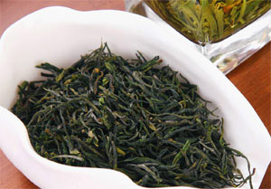

品种分类
中国现代名茶有数百种之多。根据历史分析，有下列四种情况：
传统名茶

蒙顶茶、湄潭翠芽、兰馨雀舌、蒙洱茶、西湖龙井、英山云雾茶、庐山云雾、洞庭碧螺春、黄山毛峰、太平猴魁、恩施玉露、大红袍、信阳毛尖、六安瓜片、屯溪珍眉、老竹大方、桂平西山茶、君山银针、云南普洱茶、苍梧六堡茶、福鼎白毫银针、白牡丹、安溪铁观音、凤凰水仙、闽北水仙、武夷岩茶、祁门红茶、武当道茶、古丈毛尖、英德红茶、粤东山龙茶、龙脑茶、黎平白茶、黎平雀舌等。
历史名茶
茗洲“金玉香茗"、蒙顶甘露、蒙顶黄芽、黄山金毫、湄潭翠片、泾渭茯茶、渠江皇家薄片、渠江薄片、渠江茶、休宁松罗、涌溪火青、敬亭绿雪、九华毛峰、曾侯银剑、汉家刘氏茶、龟山岩绿、仙人掌茶、天池茗毫、贵定云雾、青城雪芽、阳羡雪芽、鹿苑毛尖、霍山黄芽、顾渚紫笋、径山茶、雁荡毛峰、日铸雪芽、金奖惠明、金华举岩、粤梅香、顺生茶叶、东阳东白等等。
新创名茶
黎平香绿茶、雨亭岭大洪山茶，兰馨金尖、石阡苔茶、日照绿茶、崂山绿茶、淄博鲁山青峰绿茶、婺源茗眉、蒙洱月芽、蒙洱太空茶、南京雨花茶、云雾毛尖、雪峰禅茶、无锡毫茶、茅山青峰、金坛雀舌、天柱剑毫、寒冰天露、岳西翠兰、齐山翠眉、红山龙、望府银毫、临海蟠毫、千岛玉叶、遂昌银猴、都匀毛尖、高桥银峰、金水翠峰、永川秀芽、上饶白眉、湄潭翠芽、安化松针、遵义毛峰、文君绿茶、峨眉毛峰、雪芽、雪青、仙台大白、早白尖红茶、黄金桂、秦巴雾毫、汉水银梭、八仙云雾、南糯白毫、午子仙毫、宏和升铁观音、泉城红、泉城绿、白马毛尖等等。